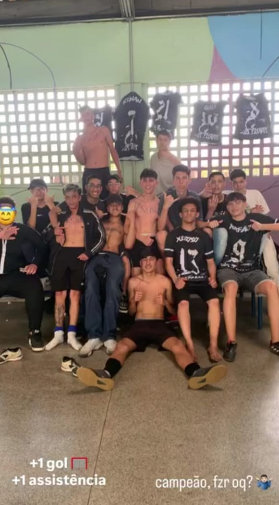
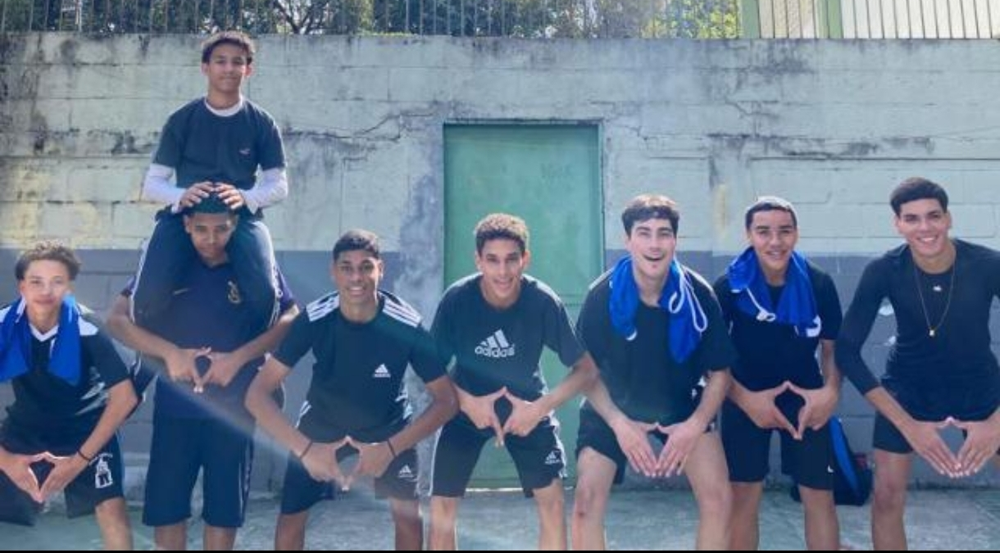
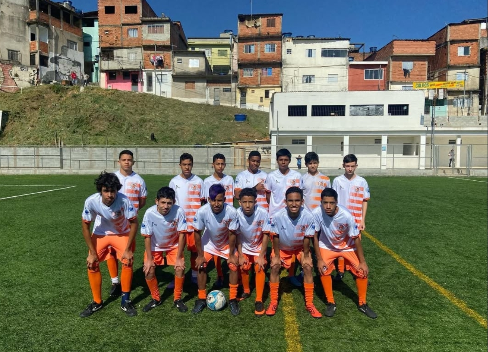
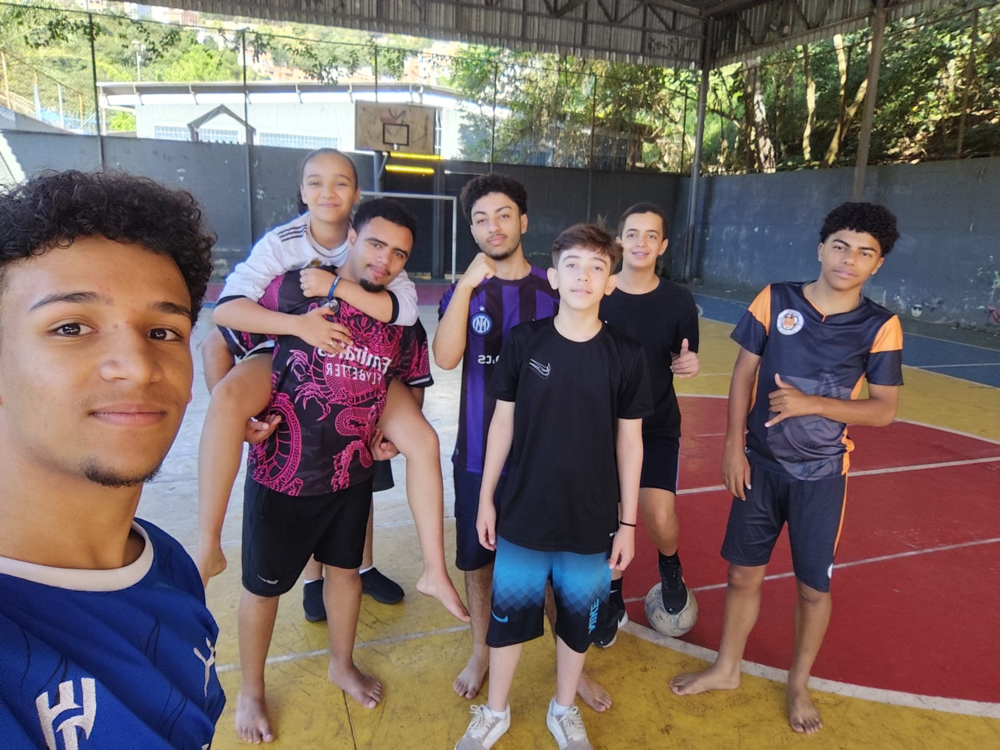

⚽ O Começo de Tudo
Minhas primeiras memórias com o futebol vêm de antes mesmo de eu entender o mundo direito, lá por 2009/2010. Eu já era aquela criança inquieta, que escalava tudo dizendo que era o Homem-Aranha, mas sempre tinha uma bola por perto. Cresci jogando principalmente com meu primo Nicolas, que considero como um irmão. A gente jogava em qualquer lugar possível: garagem, laje, casa dos meus tios… porque na rua era difícil, meus pais não deixavam. Mesmo assim, eu sempre dava um jeito. O futebol entrou na minha vida muito cedo, muito por influência do meu tio Jonas e do próprio Nicolas. E junto com isso veio a paixão pelo São Paulo e por jogadores que moldaram minha forma de ver o jogo: Rogério Ceni, Neymar e Lewandowski. Na escola, eu ia bem, tirava notas altas e até ajudava outros alunos. Mas, sendo direto, nada disso me empolgava mais do que jogar bola.
Evolução
Com o tempo, fui melhorando dentro do jogo, mesmo sem estrutura ideal. Eu não treinava em clube, não jogava federado, mas compensava isso jogando sempre que podia. Participei de vários interclasses, e já ali comecei a mostrar algo diferente: não era só jogar, eu pensava o jogo. Cheguei a ser treinador do time feminino no 6º ano e elas foram campeãs, um sinal claro de leitura tática desde cedo que eu viria explorar posteriormente. Mesmo assim, existia um conflito constante: meu pai nunca apoiou a ideia de seguir no futebol. Isso criou uma barreira real, não só prática, mas mental.
🚫 Interrupções e Frustrações
Quando uma oportunidade maior parecia surgir (como uma peneira do Palmeiras) veio a pandemia. E isso praticamente congelou qualquer avanço que eu poderia ter naquele momento. Esse tipo de ruptura não é detalhe: é o tipo de coisa que muda trajetória. Enquanto outros evoluíam em base, eu estava parado em casa. Mesmo assim, quando tudo voltou em 2022, eu retomei com intensidade. Começei a treinar no Guáras que era um dos times do bairro, fui chamado para jogar competições, conheci o Morumbi, participei da Copa Jovem Pan e tive contato com jogadores e criadores conhecidos. Ali ficou claro: eu talvez não tivesse o caminho tradicional, mas ainda conseguia competir.
🧠 Identidade em Campo
Um ponto que se repete na minha trajetória é a versatilidade. Eu nunca foi preso a uma posição só. Joguei como atacante/pivô, atuei como fixo, zagueiro, volante e até cheguei a fazer as 2 laterais, vireu goleiro em momentos decisivos, e muitas vezes fui o “coringa” do time. Isso tem dois lados: Positivo → leitura de jogo, adaptação, inteligência tática Negativo → dificuldade de se consolidar em uma posição específica Mas teve um momento que defini bem minha identidade, por não conseguei competir em habilidade com o pessoal na linha eu virei goleiro no interclasse de 2023. Ali, não foi só improviso foi desempenho de alto impacto. Defesas decisivas, liderança e reconhecimento claro (inclusive da torcida) que fez até música para mim. Foi provavelmente o ponto onde mais me destacou individualmente e fui reconhecido.
🔥 Auge e Queda
A final de 2023 resume bem minha trajetória: alto nível de atuação, participação direta em gols (assistências), resistência mesmo lesionado e, no fim, derrota pesada. Esse tipo de jogo costuma marcar mais do que vitórias fáceis. Porque ali tem dor física, emocional e sensação de “quase”. E isso claramentemte afetou, ao ponto de virar uma promessa pessoal: sair da escola com ao menos um título.
🏆 A Campanha de 2025 — A Promessa
Depois de tudo que aconteceu nos anos anteriores, 2025 não era só mais um interclasse,era uma obrigação pessoal. Eu tinha prometido pra mim mesmo que não sairia da escola sem um título. Nosso time, Os Pesados, veio mais estruturado, mas ainda com problemas: elenco curto, conflitos internos e a ausência do Renan, que fazia muita falta dentro de quadra. Mesmo assim, montamos um time competitivo, com peças versáteis e um estilo de jogo mais direto.⚔️ Fase de Grupos
Caímos em um grupo complicado, com Galáticos (favoritos) e o Complexo FC. No primeiro jogo, contra o Complexo, fiz meu golzinho e a vitória veio (3x1), mas foi enganosa. Criamos muito, mas finalizamos mal. Foi aquele tipo de jogo que expõe um problema sério: volume sem eficiência. Contra os Galáticos, veio a realidade. Eles tinham os melhores jogadores da escola, e isso pesou. Fizemos um bom jogo, equilibrado em vários momentos, o rafão ate fez um gol, mas perdemos por 2x1. Não foi um atropelo, mas ficou claro que, pra ser campeão, precisaríamos de mais do que “competir bem”. Passamos em segundo, o que nos obrigou a pegar um confronto mais difícil logo de cara.🔥 Mata-mata — Unidos da Brilhante
Esse confronto foi mais tenso do que parece no placar agregado. No jogo de ida (4x2), dominamos o primeiro tempo com imposição e organização. Mas no segundo tempo relaxamos, e quase pagamos caro por isso. Esse padrão de queda de intensidade começou a virar um alerta. Na volta, veio o caos: Time desfalcado com a expulsão do Scachetti por problemas com a diretoria, e cansaço acumulado pelo jogo ser 2 dias após o outro. Sofremos dois gols relâmpago Ali, o psicológico foi mais importante que a tática. Conseguimos reagir, mas o jogo ficou completamente aberto. E tem um ponto importante: eu não sai de campo nem por 1 minuto, e perto do fim do jogo, o placar estava em 2x1 para eles, o Bruno recupera a bola na defesa e eu vou em disparada para o ataque receber um passe, mas o Bruno tenta driblar na defesa, perde a bola, e nós levamos o gol que empatava o jogo no agregado. Ali eu explodi de raiva, briguei e xinguei muito, pelo calor do jogo, e por medod e tudo ruir de uma forma tão melancolica. Isso foi detalhe, isso mostra o nível de pressão e cobrança interna que eu estava tendo. No final, classificação no último lance. Com um gol do rafão literalmete no estouro do cronômetro. Esse tipo de vitória não é bonita, mas fortalece mentalmente.🧠 A Final — Pesados x Galáticos
A final não era só um jogo. Era: revanche da fase de grupos, os dois melhores times da escola se enfrentando na final e, no meu caso, o fechamento de um ciclo inteiro. O começo foi ruim. Tomamos 2 gols rápidos, e o time parecia travado. E aí vem uma das decisões mais simbólicas da minha história: o Stuart me aconselha jogar descalço, porque, segundo ele, eu jogava melhor assim. Não é só improviso, é confiança de um amigo. Eu percebi que não estava rendendo no seu máximo no campeonato e fiz uma mudança radical no momento mais crítico. Quando você entra: já entra cobrando o time e ajeitando como eu podia, mudando meu posicionamento (flutuando entre ala e ataque), e começando a influenciar diretamente o jogo. com isso, após um lance de controle de bola dos Galácticos, Matías tenta um passe por cima, eu intercepto de cabeça dando um passe pro Guga e me projeto pra atacar na ala, o Guga dá um passe progressivo pra mim que domino e chuto forte no alto fazendo nosso 1° gol no jogo, e isso deu confiança pro meu time, e após mais alguns lances, o Rafao sofre uma falta na entrada da área, e em uma jogada ensaiada, rola a bola pra trás e o Scachetti bate forte no canto e empata a partida, finalizando a primeira etapa. Para a segunda etapa, nós continuamos a pressão, e depois de alguns lances de ataque dos Galácticos mal sucedidos, nós ganhamos um lateral no nosso campo de defesa, e eu já me projetei para o ataque de forma despretensiosa, mas ouço o Scachetti me chamar, ele lança uma bola no alto, que eu consigo dar um passe de escorpião pra trás, onde o Guga chega livre e de primeira faz o 3x2, e ali começa o problema, pois os ânimos dos 2 times começou a ficar aflorado, recebi uma entrada forte que não foi marcada, mas relevei isso, e após despachar uma bola para escanteio, enquanto nos preparávamos para defender, acontece uma briga na área, e algumas pessoas invadem a quadra aumentando a confusão, após conseguirmos separar o Dubovick e o Scachetti, o Krausz decide acabar com o jogo, 3x2 para nós, eles até fizeram o gol no escanteio, mas o juiz já tinha apitado antes mesmo do chute, e com isso nos consagramos campeões do último Interclubes. A virada não foi sorte, foi impacto direto no jogo. Tecnicamente, não foi um final “limpo”. Mas esportivamente, o resultado já estava construído: 3x2 para os pesados se sagrarem campeões do Interclubes 2025.🧠 Liderança Fora de Campo
Antes mesmo de me firmar dentro da quadra, eu já desenvolvia uma visão diferente do jogo, observando e participando ativamente fora das quatro linhas. Em 2022 e 2023, atuei como Auxiliar Técnico do time de futsal feminino da EMEF Marili Dias, ao lado do professor Malber Luiz. Minha função não se limitava a acompanhar — eu participava diretamente: ajudando na organização da equipe, orientando posicionamento, contribuindo na leitura de jogo durante as partidas. O resultado foi concreto: 🏆 Campeãs dos Jogos Interescolares em 2022 e 2023. Dentro dessas campanhas, um destaque marcante foi minha irmã, que por dois anos consecutivos foi líder de artilharia e de assistências. Em 2022, na final contra minha antiga escola (EMEF Remo Rinaldi Naddeo), o desempenho dela sintetiza bem o nível do time: vitória por 10x0, 3 gols, 3 assistências, e ainda 3 bolas na trave. Esse tipo de atuação não vem só de talento individual, envolve organização coletiva e leitura de jogo, algo que eu ajudava a construir junto com a equipe. Ao final de uma dessas campanhas, o professor Malber fez questão de me entregar uma medalha, mesmo eu não sendo jogador. Foi um reconhecimento direto da minha influência no desempenho do time. Paralelamente, em 2022, também atuei no time masculino da mesma escola como: Auxiliar Técnico, Treinador de Goleiros, Novamente ao lado do professor Malber Luiz, contribuí na preparação da equipe, especialmente na parte defensiva. O time chegou à final e foi: 🥈 Vice-campeonato dos Jogos Interescolares. Essa fase deixa claro um padrão na minha trajetória: independente de estar jogando ou não, eu conseguia impactar diretamente o coletivo, seja organizando, orientando ou ajustando o time dentro do jogo.
Desafios Enfrentados
- Falta de apoio para seguir no futebol
- Ausência de base e treinamento estruturado
- Pandemia interrompendo oportunidades importantes
- Lesões e desgaste físico constante
- Pressão emocional em jogos decisivos
- Conflitos internos dentro de equipe
- Irregularidade de posição em campo
📚 Aprendizados
O futebol, ao longo da minha trajetória, me ensinou a:
- Tomar decisões sob pressão;
- Liderar mesmo sem posição formal;
- Entender o jogo além da execução;
- Lidar com frustração e derrota;
- Adaptar meu estilo conforme o contexto;
- Persistir mesmo sem garantia de retorno.
Acredite em você mesmo!
Galeria




🏆 Destaques
🥇 Melhor em Campo - Amistoso: Guáras X Xurupita 2022
🥇 Auxiliar Tecnico Campeão: Jogos Interescolares Sub-13 feminino de São Paulo 2022 e 2023
🥇 Melhor Fixo - Copa Remo 2018 - EMEF Remo RInaldi Naddeo
🥇 Goleiro do Campeonato - Interclasses 2023 - EE Alexandre Von Humboldt
🥇 Campeão Interclasses 2022 - EMEF Remo RInaldi Naddeo
🥇 Campeão Interclubes 2025 - EE Alexandre Von Humboldt